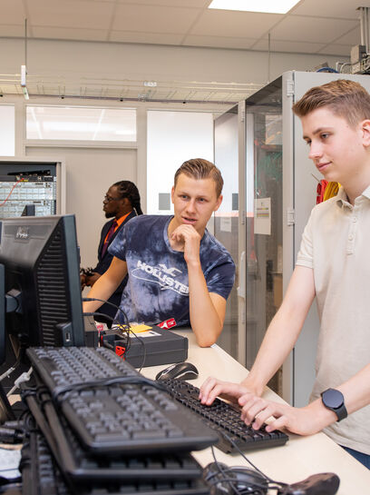

Hier op het Techniek College Rotterdam
werken wij met periodes, elk van deze periodes
is ongeveer 10 weken. Aan het einde van elke
periode neemt er een digitale ouderavond plaats.
Tijdens de ouderavonden worden de projecten van de
studenten gepresenteerd aan hun ouders of verzorgers.
Ook kan u tijdens de ouderavond een gesprek inplannen
met de SLB’er (Studie Loopbaan Begeleider) van uw zoon
of dochter mocht u nog vragen voor hem of haar hebben.